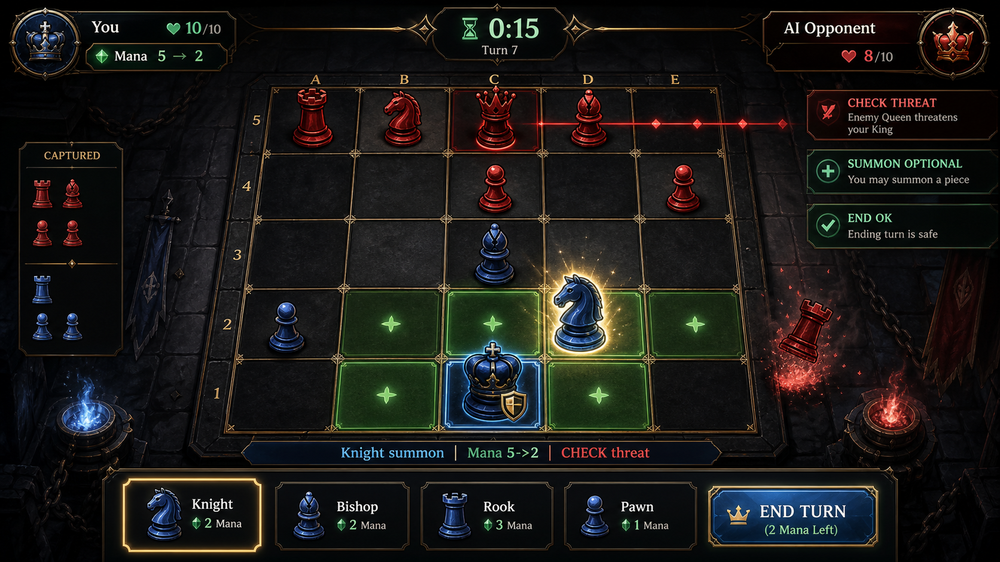

플레이 미리보기
플레이 미리보기

2026-05-18 업데이트: 소환 카드 사용 조건/등급 표기
- 소환 카드마다 즉시 또는 제물 배지를 표시한다.
- 카드 등급은 별 개수로 표시한다.
- 병사: 즉시 / ★
- 기사, 주교: 즉시 / ★★
- 탑: 제물 / ★★★
- 여왕: 제물 / ★★★★★
- 소환 카드 행 높이를 키워 말 이름, 등급, 사용 조건, 마나 비용을 한눈에 읽을 수 있게 했다.
Chess of Dark 기획서
1. 게임 개요
Chess of Dark는 5x5 체스판에서 말을 지키며 마나로 새로운 말을 소환하는 전술 게임이다. 플레이어는 제한된 시야와 3분 체스 시계 안에서 이동 1번, 소환 1번을 선택하고, 소환 위치를 확보해 전세를 뒤집어야 한다.
2. 기본 규칙
- 보드: 5x5
- 모드: 싱글 플레이어 vs AI, 온라인 멀티 플레이 로비
- 승리 조건: 상대 왕 포획 또는 체크메이트
- 턴 시작 시 마나 +2, 최대 10
- 한 턴에 이동 1번, 소환 1번 가능
- 제한시간은 체스 시계처럼 양쪽이 각각 3분을 가지고, 자기 턴 동안만 감소한다.
- 플레이어가 자기 턴에 30초 동안 입력하지 않으면 경고 팝업이 뜨며,
조금 더 생각한다를 고르지 않으면 즉시 패배한다. - 시간이 0초가 된 플레이어는 시간패한다.
- 자기 턴 시작 시 남은 시간이 10초 이하라면 10초까지 충전되어 최소 행동 시간을 보장한다.
0행 [ . ][ . ][AI 왕][ . ][ . ] 1행 [AI 병][AI 병][ . ][AI 병][AI 병] 2행 [ . ][ . ][ . ][ . ][ . ] 3행 [ . ][ . ][ . ][ . ][ . ] 4행 [ . ][ . ][PL 왕][ . ][ . ]
3. 마나와 소환
| 말 | 기본 비용 |
|---|---|
| 병사 | 1 |
| 기사 | 3 |
| 주교 | 3 |
| 성채 | 5 |
| 여왕 | 8 |
같은 종류를 반복 소환할수록 비용은 2씩 증가한다. 소환은 아군 말 주변 8칸의 빈 칸에만 가능하며, 소환된 말은 해당 턴에 이동할 수 없다.
4. UI / UX 변경 이력
v0.2.17 결과 화면 트로피 아이콘과 점수 프레임 정리
- 결과 화면의
SINGLE MMR텍스트 라벨을 제거하고result-trophy.png트로피 아이콘을 생성해 점수 상단에 표시한다. - 결과 점수 프레임을 388x316으로 키우고 진행 텍스트 위치를 아래쪽으로 정리해 점수, 증감치, 이전 점수 표기가 프레임 밖으로 빠져나가지 않게 했다.
scripts/generate_ui_frames.cjs에서 결과 트로피 아이콘도 함께 재생성되도록 추가했다.
v0.2.16 결과 화면 버튼 텍스트 위치 조정
- 결과 화면의
다시하기와메인 메뉴버튼 텍스트를 6px 낮춰 타이틀 버튼 프레임의 시각 중심에 더 가깝게 맞췄다. - 두 버튼 모두
textOffsetY: 2를 명시해 다른 title 버튼 기본 보정값과 분리된 결과 화면 전용 위치를 유지한다.
v0.2.15 인게임 HUD 프레임 리소스 재생성
chesssummon-ingame-entry-mockup-v0.1.53.png예시 이미지의 상단 대전 정보판, 하단 카드/마나/액션 영역 위계를 참고해 인게임 HUD PNG 프레임을 새로 생성했다.game-bottom-hud-frame.png를 추가해 하단 소환/마나/버튼 영역을 코드 패널이 아니라 다크 메탈/골드 베벨 프레임 리소스로 표시한다.game-top-hud-frame.png,game-summon-tile-frame.png,game-mana-frame.png,game-action-button-frame.png를 같은 생성 스크립트 기준으로 갱신해 상단/하단 HUD 톤을 맞췄다.- 소환 카드는 76x118로 키우고 하단 패널 전체 폭을 더 넓게 사용하도록 카드 간격을 4px 수준으로 줄여 예시 이미지처럼 5장 카드가 더 묵직하게 보이게 했다.
v0.2.14 멀티 로비 로고와 AI 대체 매칭 보정
- 멀티플레이 로비 상단의
온라인 멀티 플레이텍스트 타이틀을 제거하고 시작 화면과 같은Chess of Dark로고를 표시한다. - 빠른 매칭은 서버가 연결되지 않았거나 정해진 시간 안에 인간 상대를 찾지 못해도 즉시 AI 대체 매칭으로 이어져 언제든 플레이할 수 있다.
- AI 대체 매칭은 현재 MMR을 기준으로 난이도를 고르되, 하루 첫 AI 대체 매칭은 -120 MMR 보정으로 약간 쉬운 상대를 붙이고 두 번째 판부터는 +180 MMR 보정으로 약간 어려운 상대를 붙인다.
v0.2.13 난이도 버튼 문구 위치와 잠금 상태 조정
- 난이도 버튼 안의 난이도명은 버튼 중심보다 4px 아래, 설명 문구는 36px 아래로 내려
자동 배치 + 튜토리얼 선택같은 긴 문구가 프레임 안쪽에 더 안정적으로 보이게 했다. - 잠긴
매우 어려움버튼은enabled: false상태를 적용해 버튼 프레임, 텍스트, 색상이 함께 딤드 처리되도록 변경했다. - 잠금 안내 문구는 빨간 경고색 대신 DIM 텍스트 색상을 사용해 선택 불가 상태로 읽히게 했다.
v0.2.12 결과 화면 싱글 MMR 연출
- 결과 화면에서 상단 게임명, 승패 문구, 세부 패배/승리 사유,
KING CAPTURED같은 결과 설명 텍스트를 제거했다. - 결과 화면의 중심 정보를
SINGLE MMR, 현재 점수, 증감치, 이전 점수에서 현재 점수로 이동하는 표기로 단순화했다. - 싱글 플레이 결과는 로컬
chesssummon.singleMmr점수에 반영되며, 승리 시 +12점으로 최대 1200점까지만 상승하고 패배 시 -10점 하락한다. - PVP 결과는 싱글 MMR을 변경하지 않도록
multiplayerMode를 Result 화면까지 전달한다. - 패배 시 MMR 하락 수치가 아래로 떨어지는 짧은 연출을 추가했다.
v0.2.11 인게임 하단 액션 버튼 확대
chesssummon-ingame-entry-mockup-v0.1.53.png예시 이미지의 하단 대형 액션 버튼 비율을 참고해 인게임턴 종료와기권버튼 높이를 60px로 키웠다.턴 종료버튼은 238px 폭과 18px 글자로 강조하고,기권버튼은 112px 폭으로 유지해 주요 행동과 보조 행동의 위계를 분리했다.- 튜토리얼의 하단 버튼 하이라이트 영역도 커진 버튼 크기에 맞춰 확장했다.
v0.2.10 보드 말 높이 조정
- 인게임 보드 말의 공통 하단 기준선을 6px 위로 올려 말이 보드 칸 안에서 더 떠 보이지 않고 안정적으로 자리 잡게 했다.
- 배치 화면의 말 이미지도 같은
PIECE_BOARD_LIFT기준을 사용해 인게임 보드와 세로 위치감을 맞췄다. - 이동 애니메이션 역시 같은 렌더 위치 계산을 사용하므로 정지/이동 중 말 높이가 일관되게 유지된다.
v0.2.9 매칭/뒤로 버튼 텍스트 위치 조정
- 멀티플레이 로비의
빠른 매칭과뒤로버튼 텍스트를 6px 아래로 내려 타이틀 프레임 중앙에 더 가깝게 맞췄다. - 난이도 화면의
뒤로버튼 텍스트도 같은 기준으로 낮춰 메뉴 계열 버튼의 세로 정렬을 통일했다.
v0.2.8 난이도/버전 표기 위치 조정
- 난이도 버튼 안의 난이도명과 설명 문구를 각각 6px 아래로 내려 버튼 프레임 안에서 더 안정적으로 보이게 했다.
- 시작/난이도 화면의 하단 배지는
Desktop v...대신v...만 표시하도록 변경했다. - 버전 표기 위치를 화면 하단 16px 기준으로 내려, 메뉴 버튼과 분리된 릴리스 정보처럼 보이게 했다.
v0.2.7 시작 화면 로고 위치 조정
- 시작 화면의
Chess of Dark로고 중심 Y 위치를 165px에서 180px로 내려, 상단 여백과 버튼 영역 사이의 시각적 균형을 조정했다.
v0.2.6 메뉴 계열 화면 톤 통일
- 배치 화면, 튜토리얼 확인 팝업, 멀티플레이 로비, 결과 화면이 시작 화면과 같은
title-background.png기반 배경을 우선 사용하도록 정리했다. - 배치 화면 준비 버튼, 튜토리얼 선택 버튼, 멀티 로비 버튼, 결과 화면 버튼을
title-button-frame.png기반 금속 프레임으로 통일했다. - 배치 화면의 보드 외곽은
game-board-frame.png를 사용해 인게임 보드와 같은 리소스 체계로 맞췄다. - 결과 화면의 손으로 그린 왕관/패널 장식을 제거하고 시작 화면과 같은 어두운 금속 프레임 중심의 결과 연출로 변경했다.
v0.2.5 인게임 보드 프레임 이미지 리소스 적용
- 런타임 Phaser graphics로 그리던 인게임 보드 외곽 프레임을
public/assets/ui/game-board-frame.png이미지 리소스로 생성해 적용했다. scripts/generate_ui_frames.cjs를 추가해 보드 프레임 PNG를 재생성할 수 있게 했다.UI_ASSETS.gameBoardFrame과 Boot preload를 통해 보드 프레임을 정식 UI 자산으로 관리한다.- 텍스처가 없을 때만 기존 코드 드로잉 프레임으로 fallback하도록 유지했다.
v0.2.4 인게임 말 하단 기준선 정렬
- 보드 위 말 이미지를 셀 중앙 기준이 아니라 하단 기준선에 맞춰 렌더링하도록 조정했다.
- 병사와 대형 말의 표시 크기가 달라도 같은 행에서 말의 맨 아래 높이가 일치한다.
- 이동 애니메이션도 동일한 하단 기준 렌더 위치를 사용해 이동 중/이동 후 위치가 튀지 않도록 했다.
GameScene회귀 테스트에 폰/퀸 하단 y좌표 일치 검증을 추가했다.
v0.2.3 시작 화면 모드 버튼 텍스트 위치 재조정
싱글 플레이,멀티 플레이텍스트를 타이틀 버튼 프레임 중심선에 맞춰 4px 아래로 내렸다.- 난이도 선택 버튼의 2줄 텍스트 보정은 유지해 시작 화면 모드 버튼만 별도 위치값을 사용한다.
MenuFlow회귀 테스트의 시작 화면 버튼 텍스트 y좌표를 갱신했다.
v0.2.2 버튼 텍스트 위치 보정
- 타이틀 버튼 프레임의 시각 중심에 맞춰 공통 버튼 텍스트를 위로 보정했다.
- 난이도 선택 버튼의 난이도명/설명 2줄 배치를 재조정해 글자가 프레임 장식에 붙어 보이지 않도록 수정했다.
MenuFlow회귀 테스트에 시작/난이도 버튼 텍스트 y좌표 검증을 추가했다.
v0.2.1 시작 메뉴 모드 선택 고정
- 시작 화면이 빌드 채널과 무관하게 항상 싱글 플레이/멀티 플레이 선택을 먼저 보여주도록 수정했다.
- 기존에는 Steam 채널에서만 모드 선택이 나오고 Desktop/HTML 기본 빌드에서는 바로 난이도 선택으로 진입했다.
MenuFlow회귀 테스트를 갱신해 모든 릴리즈 채널에서 모드 선택이 유지되도록 고정했다.
v0.2.0 서버 권위 PvP 매칭 경로 추가
- 두 명의 대기열 유저가 매칭되면 서버가
pvpSession을 생성하고 보드 상태, 턴, 마나, 결과를 소유한다. - 클라이언트가 임의 승자를 보내는 기존
matchResult경로를 막고, 서버가 생성한 resign/disconnect/king capture 결과로만 랭크 점수를 갱신한다. - Electron Steam ID bridge와 WebSocket
steamIdquery를 추가해 Steam 계정 기반 매칭/랭크 식별 경로를 마련했다. - 로비는
pvpState를 받으면Game씬으로 진입하고, GameScene은 이동/소환/턴 종료를pvpCommand로 서버에 보내며 서버 스냅샷으로 보드를 복원한다.
v0.1.95 시작 화면 로고 위치 조정
- 시작/난이도 화면의 공통 브랜드 로고 중심 y좌표를 150에서 165로 낮춰 상단에 붙어 보이는 느낌을 줄였다.
- 기존 410x205 로고 크기와 버튼 배치는 유지해 버튼 영역의 가독성과 터치 여백은 흔들리지 않게 했다.
v0.1.94 Multiplayer/MMR 출시 판단 정리
src/multiplayer/releaseReadiness.js를 추가해 AI 대체 매칭, 로컬 MMR 저장, SteamRANK_POINTS업로드 어댑터와 실제 공개 PvP 랭크의 차이를 테스트 가능한 기준으로 분리했다.- 현재 1차 Steam 출시 범위는 싱글 플레이와 AI 대체 매칭/랭킹 프리뷰까지가 안전하며, 공개 랭크 PvP는 서버 권위 보드 상태, Steam ID 계정 매핑, 서버 검증 결과 처리가 추가될 때까지 보류한다.
docs/Multiplayer_MMR_출시_판단.md에 현재 가능한 범위, 남은 blocker, 추천 출시 범위를 별도 문서로 정리했다.
v0.1.93 Steam 스토어 자산 패키지 기준 정리
- Steamworks 공식 그래픽 자산 기준에 맞춰
src/steam/storeAssets.js에 필수 캡슐/스크린샷/라이브러리 자산 크기 카탈로그를 추가했다. docs/Steam_스토어_제출_패키지.md를 추가해 캡슐 제작 방향, 16:9 스크린샷 샷 리스트, 15-30초 트레일러 구성, 한국어/영어 스토어 문구 초안을 정리했다.- Steam 스토어 자산 크기가 바뀌어도 회귀 테스트로 필수 크기 기준을 확인할 수 있게 했다.
v0.1.92 Steam 제출 준비 체크리스트 자동화
src/steam/releaseReadiness.js를 추가해 현재 버전 산출물명, 업적/스탯/리더보드 카탈로그, Steamworks/스토어/수동 QA blocker를 한 번에 계산하게 했다.docs/Steam_제출_QA_체크리스트.md를 추가해 Steam 제출 직전 확인할 빌드 산출물, 외부 Steamworks 설정, 스토어 자료, 수동 QA 항목을 정리했다.- Steam 출시 프로세스를 눈대중이 아니라 테스트 가능한 체크리스트로 이어갈 수 있도록 회귀 테스트를 추가했다.
v0.1.91 매우 어려움 잠금 버튼 양식 통일
- 잠금 상태의
매우 어려움도 다른 난이도와 동일한 92px 타이틀 버튼 프레임/흰색 난이도명/버튼 내부 안내 문구 양식으로 보이게 했다. - 해금 전에는 여전히 배치 화면으로 진입하지 않지만, 회색 반투명 버튼처럼 분리되어 보이지 않도록 시각 상태만 통일했다.
v0.1.90 난이도 선택 버튼 내부 설명 배치
- 싱글 플레이 선택 후 난이도 선택 화면에서 상단의
싱글 플레이,난이도를 선택하세요문구를 삭제해 로고 아래 시선을 버튼으로 바로 보내도록 정리했다. - 난이도 버튼 높이를 74px에서 92px로 키우고 각 난이도 설명/해금 문구를 버튼 내부 두 번째 줄로 배치했다.
- 난이도 선택 히트 영역을 100px 높이로 확장해 커진 버튼과 터치 영역이 일치하도록 조정했다.
v0.1.89 시작 화면 모드 버튼 가독성 조정
- 시작 화면에서 로고와 버튼 사이에 있던
5x5 어둠의 전장에서 말을 소환해 왕을 무너뜨리세요보조 문구를 삭제해 첫 화면을 더 단순하게 정리했다. 싱글 플레이,멀티 플레이버튼 텍스트 크기를 24px에서 22px로 줄여 타이틀 버튼 프레임 안에서 글자가 더 안정적으로 보이게 했다.
v0.1.88 시작 화면 로고 PNG 재제작
public/assets/brand/chesssummon-logo.png를 예시 시작 화면과 가까운 3D 금속 타이포, 왕 말 문장, 청록 보석 포인트가 결합된 투명 PNG 워드마크로 새로 생성했다.- 메뉴 로고 로딩 경로를 SVG에서 PNG 이미지 자산으로 교체해 배경/버튼 비트맵 리소스와 같은 렌더링 톤을 사용하게 했다.
- 시작 화면 로고 표시 크기를 410x205로 조정해 가로로 눌려 보이던 느낌을 줄이고 상단 타이틀의 무게감을 키웠다.
v0.1.87 Steam 리더보드 조회 경로 추가
- Steam 브릿지에
downloadLeaderboardEntries경로를 추가해RANK_POINTS리더보드 업로드뿐 아니라 조회도 요청할 수 있게 했다. - Electron main/preload/IPC와 SteamService가 리더보드 조회를 안전한 fallback 응답과 함께 전달하도록 확장했다.
- 멀티플레이 로비에 Steam 랭킹 요약 텍스트를 추가해 Steam SDK가 준비된 환경에서는 상위 랭킹을 표시할 수 있게 했다.
v0.1.86 실행파일 창 크기 정렬
- Windows 포터블 실행파일의 Electron 창 콘텐츠 영역을 게임 기준 해상도인 450x800으로 맞췄다.
useContentSize: true를 적용해 창 프레임을 제외한 실제 게임 화면이 캔버스 크기와 일치하게 했다.- 세로형 9:16 테스트 빌드에서 불필요한 가로 여백이 생기지 않도록 초기 창 크기를 고정했다.
v0.1.85 패배 결과 화면 연출 개선
- 결과 화면을 시작/인게임 화면과 같은 다크 판타지 금속 플레이트 구성으로 다시 배치했다.
- 패배 시 붉은 균열, 어두운 왕관, 원인 라벨을 중앙 결과 플레이트에 분리해 표시해 패배 상황을 더 강하게 인지할 수 있게 했다.
- 다시하기/메뉴 버튼을 하단 대형 금속 버튼으로 정렬해 텍스트 잘림과 화면 톤 이탈을 줄였다.
v0.1.84 인게임 보드 프레임 제외
- 인게임 분위기와 맞지 않던
game-board-frame.png비트맵 프레임을 실제 보드 렌더링에서 제외했다. - 보드 주변은 코드 기반의 어두운 패널, 얇은 골드 라인, 절제된 테두리만 사용해 배경/말/소환 UI와 더 자연스럽게 맞춘다.
UI_ASSETS와 VisualTheme 검증에서gameBoardFrame참조를 제거해 이후 빌드에 해당 리소스가 다시 포함되지 않도록 정리했다.
v0.1.83 전투 시작 연출 겹침 개선
- 전투 시작 오버레이 플레이트 높이를 키우고, 제목/부제용 반투명 텍스트 밴드를 추가해 배경 이미지와 글자가 직접 겹치지 않게 했다.
- 왕 이미지와 VS 표기를 하단 대결 영역으로 내려 텍스트 영역과 이미지 영역을 분리했다.
- 왕 이미지 최초 크기와 확대 목표를 줄여 태그, 하단 라인, VS가 서로 붙어 보이는 문제를 완화했다.
v0.1.82 시작 화면 레이아웃 및 버튼 여백 조정
- 시작 화면 로고를 y=144 위치와 392x155 크기로 조정해 통합형 워드마크가 상단에 붙어 보이지 않고 더 안정적으로 보이게 했다.
- 싱글/멀티 버튼을 322x90으로 키워 내부 여백과 터치 영역을 늘렸다.
- 난이도 버튼을 322x74로 키우고 버튼 간격, 힌트, 뒤로 버튼 위치를 다시 조정해 글자와 프레임이 더 여유 있게 보이도록 했다.
v0.1.81 통합형 로고 워드마크 적용
public/assets/brand/chesssummon-logo.svg를 별도 문장 마크와 텍스트가 분리된 형태에서, 왕관/소환 보석/장식 라인이 글자 구조 안에 결합된 통합형 워드마크로 다시 제작했다.- 시작 화면에서는
title-logo-ornament.png를 로고 뒤에 별도로 렌더링하지 않고,brand_logoSVG 하나만 표시하도록 정리했다. - BrandRankBot/VisualTheme 테스트를 통합형 로고 구조와 별도 장식 미사용 기준으로 갱신했다.
v0.1.80 시작 화면 로고 및 문구 정리
public/assets/brand/chesssummon-logo.svg를 시작 화면 축소 렌더링에서 더 선명하게 보이는 대형 금속 타이포/문장형 로고로 다시 생성했다.- 시작 화면의
플레이 모드 선택안내 문구를 제거하고, 깨져 보이던 소개 문구를5x5 어둠의 전장에서 말을 소환해 왕을 무너뜨리세요로 복구했다. - MenuFlow 테스트에 시작 화면 문구가 정상 한글로 표시되고 모드 선택 제목이 렌더링되지 않는지 검증을 추가했다.
v0.1.79 문장형 로고 재제작
public/assets/brand/chesssummon-logo.svg를 금속 타이포, 중앙 문장 방패, 왕 말, 청록 소환 링/보석 포인트가 결합된 새 SVG 로고로 교체했다.- 시작 화면에서 기존 로고 키
brand_logo를 그대로 사용하므로 메뉴 로딩 경로는 유지하면서 새 로고가 즉시 적용된다. - BrandRankBot 테스트에 새 로고의 문장형 표식과 청록 글로우 검증을 추가해 리소스가 이전 단순 로고로 되돌아가지 않도록 했다.
v0.1.78 예시 화면 기준 인게임 레이아웃 재배치
- 인게임 하단 소환 영역을 세로 목록에서 예시 화면과 유사한 5개 가로 카드형 배치로 변경했다.
- 소환 카드 전용 세로 프레임
game-summon-tile-frame.png를 추가하고 각 카드에 말 이미지, 이름, 마나 비용이 한 카드 안에 보이도록 재배치했다. - 보드와 하단 패널 사이 간격, 소환 라벨/카드/마나/하단 버튼 간격을 다시 계산해 9:16 화면에서 UI가 겹치지 않도록 조정했다.
- 활성 소환 카드도 어두운 글자가 아니라 금색/흰색 계열 텍스트를 유지해 작은 카드 안에서 가독성을 확보했다.
- VisualTheme 레이아웃 테스트를 가로 카드형 소환 영역 기준으로 갱신했다.
- 시작 화면은 예시 이미지처럼 로고 영역 아래에 카피와 모드 선택을 정리하고, 싱글/멀티 버튼을 하단 핵심 액션 영역으로 내려 배치했다.
- 난이도 선택 화면의 4개 난이도 버튼을 동일한
title-button-frame.png대형 프레임으로 통일하고, 잠긴매우 어려움상태에서도 버튼 리소스가 유지되도록 테스트를 추가했다.
v0.1.77 인게임 PNG 리소스 및 레이아웃 톤 개선
- 시작 화면 예시 톤을 기반으로 인게임 전용 배경
game-background.png를 새로 만들고 GameScene 배경에 적용했다. - 상단 시계 HUD, 보드 프레임, 소환 카드, 마나 게이지, 턴 종료/기권 버튼에 전용 PNG 프레임 리소스를 추가했다.
- 보드 타일 색을 밝은 갈색 계열에서 어두운 석판/금색 라인 계열로 바꿔 새 프레임과 더 잘 어울리게 했다.
- 인게임 HUD는 기존 SVG 프레임 대신
game-top-hud-frame.png,game-summon-card-frame.png,game-mana-frame.png,game-action-button-frame.png를 우선 사용한다. - VisualTheme 테스트가 새 인게임 PNG 리소스의 프리로드와 실제 씬 적용 여부를 확인하도록 갱신했다.
v0.1.76 시작 화면 PNG 리소스 적용
- 시작 화면 전용 배경 이미지
title-background.png를 생성하고 메뉴의 타이틀 화면 배경으로 적용했다. - 시작 화면 버튼 전용 이미지 프레임
title-button-frame.png를 생성하고 싱글/멀티/난이도/뒤로 버튼에 적용했다. - 로고 주변 장식 이미지
title-logo-ornament.png를 생성해 기존Chess of Dark텍스트 로고 뒤에 배치했다. - BootScene이 SVG와 PNG 리소스를 함께 프리로드하도록 수정해 시작 화면 이미지 리소스가 실제 메뉴에 적용되게 했다.
v0.1.75 로고 및 공통 배경 리소스 적용 강화
Chess of Dark로고를 박스형 패널 로고에서 참고 시작 화면에 가까운 금속 타이포/왕 심볼/청록 보석 포인트 SVG로 교체했다.stage-background.svg의 어두운 석조 본전, 금색 라인, 중앙 청록 발광을 강화해 시작 화면의 입체감을 높였다.- 인게임 보드 배경도 동일한
stage-background리소스를 기반으로 그리도록 연결해 메뉴와 게임 화면 사이의 시각적 단절을 줄였다. - 리소스 적용 누락을 테스트로 확인할 수 있도록 VisualTheme 검증에 로고 텍스트와 인게임 stage 배경 적용 검사를 추가했다.
v0.1.74 어려움 AI 강화 및 매우 어려움 해금
- 어려움 AI도 즉시 체크메이트 가능한 이동을 우선 선택하도록 강화했다.
- 어려움/매우 어려움 AI의 소환 평가는 체크 압박과 체크메이트 가능성을 더 강하게 반영한다.
- 매우 어려움 난이도는 기본 잠금 상태로 표시하고, 어려움 난이도 승리 업적
hard_win이 해금된 뒤 선택 가능하게 했다. - 잠금 상태에서는 난이도 선택 화면에
어려움 승리 후 해금안내를 표시하고 클릭 영역을 만들지 않는다.
v0.1.73 Chess of Dark 리브랜딩 및 화면 리소스 적용
- 게임 표시명을
Chess of Dark로 변경하고 메뉴 타이틀, HTML title, Electron 창 제목, Windows productName을 맞췄다. - 승인된 시작화면 방향을 바탕으로 어두운 석조/금속/금색 계열의
stage-background.svg를 생성해 메뉴와 주요 씬 배경에 적용했다. - 승인된 플레이화면 방향을 바탕으로 상단 HUD, 소환 카드, 마나 게이지 프레임 SVG를 생성해 인게임 UI에 적용했다.
- 기존 플레이 예시 이미지에서 전투 시작 플레이트를 잘라
battle-entry-plate.png로 만들고 인게임 입장 연출에 적용했다. - 기존 저장 경로와 실행파일 접두어는 테스트/유저 데이터 호환성을 위해 유지한다.
v0.1.72 매우 어려움 난이도 추가
- 어려움보다 한 단계 깊은 4-depth minimax 탐색을 사용하는 매우 어려움 난이도를 추가했다.
- 매우 어려움 AI는 즉시 체크메이트가 가능한 이동을 먼저 탐색해 기회를 놓치지 않도록 했다.
- 난이도 선택 화면, 다시하기, 전초 배치 흐름에 매우 어려움을 연결했고, 어려움처럼 직접 병사 배치를 거친다.
- 매칭 fallback AI는 랭크 포인트 1500점 이상에서 매우 어려움으로 배정되도록 했다.
- 매우 어려움도 AI 사고 시간 3~5초 범위를 유지해 인간적인 템포를 해치지 않게 했다.
v0.1.71 체크메이트 전용 연출
- 체크메이트로 게임이 끝날 때
resultReason: checkmate를 전달해 일반 왕 포획 종료와 구분되게 했다. - 체크메이트 순간에는 화면 플래시, 카메라 흔들림, 왕 위치 중심 버스트, CHECKMATE 라벨을 표시한다.
- 결과 화면에 체크메이트 승리/패배 문구를 별도로 표시하고 회귀 테스트를 추가했다.
v0.1.70 저시간 턴 시작 보정
- 자기 턴 시작 시 남은 시간이 10초 이하인 경우 해당 플레이어의 체스 시계를 10초까지 충전하도록 룰을 추가했다.
- 3분 체스 시계와 AI 3~5초 사고 시간은 유지한다.
- 턴 시작 이벤트와 HUD에 보정된 시간이 반영되는 회귀 테스트를 추가했다.
v0.1.69 AI 사고 시간 조정 및 3분 제한시간 유지
- AI가 한 턴에 3~5초를 소모하도록 사고 시간 범위를 모든 난이도에서 3000~5000ms로 조정했다.
- 양쪽 체스 시계의 기본 시간은 기존 출시 기준인 3분(180초)을 유지했다.
- AI 사고 시간과 3분 제한시간 회귀 테스트를 새 기준에 맞게 갱신했다.
v0.1.68 AI 사고 시간 및 제한시간 재조정
- AI가 한 턴에 3~5초를 소모하도록 사고 시간 범위를 모든 난이도에서 3000~5000ms로 조정했다.
- 양쪽 체스 시계의 기본 시간을 3분에서 5분(300초)으로 다시 늘렸다.
- AI 사고 시간과 제한시간 회귀 테스트를 새 기준에 맞게 갱신했다.
v0.1.67 Steam 출시 채널 메뉴 복구
- Steam 출시 채널에서는 테스트 배포용 난이도 직행을 사용하지 않고, 싱글 플레이/멀티 플레이 모드 선택 화면을 먼저 보여주도록 복구했다.
- Desktop/HTML 테스트 채널은 빠른 확인을 위해 난이도 선택 화면으로 바로 진입하는 동작을 유지한다.
- 메뉴 흐름 테스트에 Steam 채널과 테스트 채널의 시작 화면 분기 검증을 추가했다.
v0.1.66 테스트 배포용 난이도 직행
- 테스트 중인 배포 흐름에서는 시작 화면의 싱글/멀티 모드 선택을 생략하고 곧바로 난이도 선택 화면을 보여주도록 변경했다.
- 직행 난이도 선택 화면에서는 뒤로가기 버튼을 숨겨 테스터가 모드 선택 화면으로 빠지지 않게 했다.
- 다시하기 흐름은 쉬움/어려움 재시작 회귀 테스트로 확인했고, 메뉴 직행 흐름 테스트를 추가했다.
v0.1.65 보드/소환 패널 폭 정렬
- 상단 HUD 높이를 92px에서 72px로 줄여 보드가 차지할 수 있는 세로 공간을 확보했다.
- 보드 칸 크기를 72px로 키워 5x5 말판 격자 폭이 소환 카드 영역과 거의 같은 360px이 되게 했다.
- 보드 외곽 프레임 폭을 하단 소환 패널 폭과 맞추고, 하단 HUD 위치를 내려 보드/마나/버튼이 겹치지 않게 재배치했다.
- 9:16 레이아웃 회귀 테스트에 보드 폭과 소환 패널 폭 정렬 검증을 추가했다.
v0.1.64 이동/공격 가능 구역 시야 복구
- v0.1.63에서 전 보드 공개를 막기 위해 이동 경로 시야를 선택한 말로만 제한한 수정은 원래 규칙을 과하게 줄인 것으로 확인했다.
- 내 모든 말의 이동 가능 구역과 공격 가능 구역은 다시 시야에 포함되도록 복구했다.
- 쉬움 난이도의 전 보드 강제 공개 제거는 유지하되, 내 말들이 실제로 영향력을 갖는 칸은 난이도와 관계없이 밝히도록 회귀 테스트를 갱신했다.
v0.1.63 보통 난이도 과도한 시야 확장 수정
- 내 모든 말의 이동 가능 경로를 항상 시야에 포함하던 로직 때문에 보통 난이도에서도 장거리 말이 생기면 보드 대부분이 밝아지는 문제를 수정했다.
- 이제 기본 시야는 내 말 주변 1칸과 체크 위협 정보만 유지하고, 이동 가능 경로는 실제로 선택한 말에 대해서만 임시로 밝힌다.
- 선택 전에는 장거리 말의 이동 경로가 먼 적 진영까지 공개하지 않고, 선택 후에만 해당 말의 이동 경로가 보이는 회귀 테스트를 추가했다.
v0.1.62 쉬움 난이도 전체 시야 노출 수정
- 쉬움 난이도에서 플레이어 화면의 안개가 전부 사라져 전체 보드가 보이던 분기를 제거했다.
- AI는 내부 보드 상태를 그대로 사용하되, 플레이어 화면은 난이도와 관계없이 내 말 주변/이동 경로/체크 위협 중심의 기존 시야 규칙을 유지한다.
- 쉬움 난이도에서도 먼 적 진영 칸이 즉시 공개되지 않도록 회귀 테스트를 갱신했다.
v0.1.61 턴 알림 시야 방해 완화
- 일반 턴 알림에서 보드를 가리던 배경 사각형과 테두리를 제거했다.
내 턴/AI 턴텍스트가 보드 중앙에 고정되지 않고 위로 떠오르며 반투명하게 사라지도록 바꿨다.- 턴 알림이 보드 시야를 가리지 않도록 배경 제거와 상승 페이드 애니메이션을 회귀 테스트로 고정했다.
v0.1.60 시간패 결과 문구 추가
- 체스 시계가 0초가 되어 패배한 경우 결과 화면에
시간이 부족해서 졌습니다를 표시하도록 했다. - 상대가 시간패한 경우에는
상대 시간이 부족해 승리했습니다를 표시해 일반 승리와 시간 승리를 구분한다. - 게임오버 전환 데이터에
resultReason: timeout을 추가하고, 타이머 종료 회귀 테스트와 결과 문구 테스트를 보강했다.
v0.1.59 소환 카드 영역 확대
- 하단 소환 패널에서
아군 주변 빈 칸보조 문구를 제거해 사용하지 않는 세로 공간을 줄였다. - 소환 카드 높이를 26px에서 36px로 키우고 카드 간격을 넓혀 말 아이콘, 이름, 마나 비용을 더 쉽게 읽을 수 있게 했다.
- 커진 소환 카드 전체를 튜토리얼 하이라이트가 감싸도록 소환 UI 강조 영역을 확장했다.
- 소환 카드 크기와 하단 마나 게이지/버튼이 겹치지 않도록 레이아웃 회귀 테스트를 갱신했다.
v0.1.58 다시하기 재시작 안정화
- 결과 화면의
다시하기가 클릭 이벤트 처리 중 즉시 씬을 바꾸지 않고 다음 틱에 새 게임/배치 씬을 시작하도록 수정했다. - 다시하기 중복 클릭을 막아 같은 결과 화면에서 재시작 요청이 여러 번 쌓이지 않게 했다.
Game,UI,Tutorial,MultiplayerLobby씬의 shutdown 정리를 Phaser 종료 이벤트에 연결해 이전 타이머와 이벤트 리스너가 재시작된 게임을 방해하지 않도록 했다.- 게임오버 전환 타이머와 AI 사고 지연 타이머를 추적/정리하고, 게임오버가 중복 호출되어도 결과 화면 전환이 한 번만 예약되도록 회귀 테스트를 추가했다.
v0.1.57 튜토리얼 팝업 버튼 잔상 수정
- 튜토리얼 정보 팝업의 확인 버튼을 닫거나 다음 단계로 넘길 때 SVG 버튼 배경까지 함께 제거되도록 수정했다.
- 튜토리얼 오버레이 정리 함수가 null 항목도 안전하게 건너뛰도록 바꿔 텍스처 유무와 관계없이 팝업 정리가 안정적으로 동작하게 했다.
- 회귀 테스트를 추가해 튜토리얼 확인 버튼 배경, 텍스트, 진행 점이 모두 정리되는지 검증한다.
v0.1.56 보드 확대 및 비폰 말 크기 강화
- 인게임 보드 칸 크기를 62px에서 65px로 키워 5x5 말판이 화면을 더 크게 차지하게 했다.
- 보드 좌표를 재조정해 커진 말판이 9:16 화면 안에서 좌우와 하단 소환 패널을 침범하지 않게 했다.
- 폰은 기존에 가까운 크기를 유지하고, 왕/퀸/룩/비숍/나이트는 전용 크기값으로 더 크게 렌더링해 한 칸 밖으로 조금씩 빠져나오게 했다.
- 이동 애니메이션도 같은 말 크기 계산을 사용해 정지 상태와 움직이는 상태의 크기 차이가 나지 않게 했다.
v0.1.55 상단 힌트 중앙 정렬 및 턴 라벨 제거
- 상단 HUD의
말을 선택해...안내 문구를 한 줄 가운데 정렬로 바꿔 시계 아래에서 화면 중심에 맞춰 보이게 했다. - 별도
내 턴/AI 턴위치 텍스트를 제거하고, 내 시간/상대 시간 시계의 강조 색만으로 현재 턴을 구분하게 했다. - 턴 라벨 제거와 힌트 중앙 정렬을 회귀 테스트로 고정해 상단 HUD가 다시 복잡해지지 않도록 했다.
v0.1.54 상단 양쪽 시계 및 하단 여백 압축
- 상단 HUD에 플레이어와 상대의 남은 시간을 동시에 표시해 체스 시계 상태를 한눈에 비교할 수 있게 했다.
- 시간 아래 안내 문구는 한 줄 고정 표시로 바꾸고 긴 문구는 말줄임 처리해 불필요한 개행으로 HUD 높이가 흔들리지 않게 했다.
- 보드 아래 남던 빈 공간을 줄이기 위해 하단 소환 패널을 보드 쪽으로 올리고 패널 높이를 키워 하단 조작 영역이 더 꽉 차 보이게 했다.
- 도움말 팝업의 세로 높이와 버튼 위치를 늘려 본문 글자와 닫기 버튼이 겹치지 않도록 했다.
v0.1.53 인게임 입장 연출 강화
- 생성형 컨셉 이미지
docs/assets/chesssummon-ingame-entry-mockup-v0.1.53.png를 기준으로 전투 시작 순간의 금속 프레임, 왕 대 왕 구도, 청색/적색 진영 대비 방향을 정했다. - 첫 플레이어 턴 시작 전에만 전투 시작 오버레이가 보드 중앙에 등장했다가 사라지도록 추가해 전투 진입감을 높였다.
- 실제 게임 화면에는 새 비트맵 UI를 직접 얹지 않고 기존 말 이미지와 Phaser 그래픽 오브젝트로 연출해 글자 깨짐과 해상도 열화를 피했다.
v0.1.52 상단 HUD 압축 및 안내 문구 이동
- 상단 HUD에서 타이머 글자 크기와 배치를 줄여 시간 표시가 차지하는 영역을 압축했다.
- 보드 아래에 있던
말을 선택해...안내 문구를 상단 HUD 안으로 이동해 주요 상태 정보를 한 곳에서 읽을 수 있게 했다. GameScene은 힌트 문구를 직접 그리지 않고hint-change이벤트를 보내며,UIScene이 상단 HUD에서 줄바꿈 가능한 안내 문구로 표시한다.
v0.1.51 보드판 확대 및 세로 레이아웃 재조정
- 9:16 화면에서 남는 공간을 줄이기 위해 보드 칸 크기를 키워 전체 보드판을 더 크게 표시했다.
- 커진 보드가 화면 중앙에 안정적으로 들어오도록 보드 시작 좌표를 왼쪽/위쪽으로 재조정했다.
- 보드 확대 후에도 보드 힌트, 하단 소환 패널, 마나 게이지, 하단 버튼이 겹치지 않도록 하단 HUD 위치를 다시 정렬했다.
v0.1.50 말 크기 확대 및 판 밖 실루엣 강화
- 전투 화면과 전초 배치 화면의 말 표시 크기를 셀보다 조금 더 크게 조정해 말 실루엣이 판 칸 밖으로 살짝 삐져나오게 했다.
- 말 그림자 폭과 높이도 함께 키워 확대된 말이 바닥에 자연스럽게 붙어 보이도록 했다.
- 말 크기가 셀보다 충분히 크되 과하게 커지지 않도록 레이아웃 회귀 테스트 기준을 갱신했다.
v0.1.49 보드 힌트 문구 잘림 수정
- 보드 아래
말을 선택해...힌트 박스가 보드 폭에만 맞춰져 긴 문구가 한 줄로 잘리던 문제를 수정했다. - 힌트 박스를 하단 HUD와 같은 폭으로 넓히고, 텍스트 폭 제한과 줄바꿈을 적용해 영역 밖으로 나가지 않게 했다.
- 보드 힌트가 전체 폭 프레임과
wordWrap을 사용하도록 회귀 테스트를 추가했다.
v0.1.48 하단 HUD 겹침 수정
- 소환 안내 문구가 첫 번째 소환 버튼 영역과 겹치던 문제를 줄이기 위해 소환 카드 목록 시작 위치를 아래로 조정했다.
- 턴 종료/항복 버튼이 하단 패널 경계를 살짝 벗어나던 문제를 막기 위해 하단 버튼 위치를 패널 안쪽으로 올렸다.
- 하단 HUD 내부에서 안내 문구, 소환 카드, 마나 게이지, 하단 버튼이 각각 최소 여백을 확보하는 레이아웃 회귀 테스트를 추가했다.
v0.1.47 마나 게이지 수치 가독성 개선
- 소환 카드 아래 마나 게이지 중앙에
보유 마나 현재 / 최대형식의 숫자를 직접 표시해 현재 마나량을 즉시 읽을 수 있게 했다. - 게이지 채움 정도와 관계없이 마나 숫자는 흰색 텍스트, 어두운 외곽선, 그림자로 고정해 밝은 채움/어두운 배경 양쪽에서 모두 보이도록 했다.
- 마나 게이지 라벨 포맷터 테스트를 추가해 최대 마나 초과 값도
10 / 10으로 제한해 표시되는지 검증한다.
v0.1.46 배경/브랜드/버튼 팔레트 통합
- 스테이지 배경을 버튼과 같은 어두운 석판/금속 계열로 정리하고, 금색 라인 장식으로 UI 프레임과 연결감을 높였다.
- 로고와 브랜드 마크에서 청록색 강조를 제거하고 금색/아이보리 중심의 세리프 로고 톤으로 맞췄다.
- 활성 버튼의 텍스트를 흰색으로 되돌리고 외곽선과 그림자를 강화해 작은 화면에서도 글자가 묻히지 않도록 했다.
- 브랜드 SVG가 버튼 팔레트와 어긋나지 않도록 시각 테마 테스트를 추가했다.
v0.1.45 버튼 가독성 및 금속 프레임 개선
button-primary.svg,button-danger.svg를 어두운 금속/석판 스타일의 고대 판타지 버튼으로 교체했다.- 텍스트 영역을 침범하던 밝은 장식 대신 가장자리 중심의 하이라이트와 금색/적색 테두리를 적용해 버튼 내부 가독성을 높였다.
- 버튼 텍스트에 외곽선과 그림자를 적용해 작은 9:16 화면에서도 흰 글자가 배경에 묻히지 않도록 했다.
- 비활성, 활성, 위험 버튼 상태의 tint와 텍스트 대비를 조정해 상태 구분을 명확하게 했다.
v0.1.44 무입력 경고 팝업 버튼 잔상 수정
- 무입력 경고 팝업이 닫힐 때 버튼의 SVG 배경 아트까지 함께 제거되도록 정리해, 팝업이 사라진 뒤 버튼 모양만 화면에 남는 문제를 수정했다.
- 같은 버튼 아트 정리 누락이 생기지 않도록 도움말과 항복 확인 모달도 버튼 배경까지 함께 destroy하도록 맞췄다.
v0.1.43 HUD 액션 박스 제거 및 마나 게이지 재배치
- 상단 HUD와 하단 패널에 남아 있던
이동 1회,소환 1회액션 박스를 제거해 텍스트가 패널 밖으로 밀리는 문제를 줄였다. - 상단 HUD는 턴, 남은 시간, 도움말, 체크 경고 중심으로 단순화했다.
- 보유 마나는 소환 카드 목록 아래의 게이지바로 이동해 소환 비용과 자원 상태가 한 영역에서 읽히도록 정리했다.
v0.1.42 다시하기 직접 재시작 안정화
- 쉬움/보통 난이도에서 결과 화면
다시하기를 누르면 배치 씬의 자동 시작 타이머를 거치지 않고 새 폰 배치를 생성해 바로 전투 씬으로 진입하게 했다. - 어려움 난이도는 직접 폰 위치를 다시 조정해야 하므로 기존처럼 배치 화면으로 이동한다.
- 매칭된 AI 프로필을 결과 화면과 다시하기 흐름에 유지해 같은 수준의 AI 재대전 흐름이 끊기지 않도록 했다.
v0.1.41 소환 카드 단순화 및 다시하기 안정화
- 소환 버튼에서 말 하단 별 표시와
즉시/제물같은 조건 텍스트를 제거하고, 말 이름과 마나 아이콘 비용만 보이게 정리했다. - 결과 화면의
다시하기는 이전UI,Tutorial,Game씬을 정리한 뒤 다음 프레임에 배치 화면을 시작해 전환이 멈추는 상황을 줄였다. - 시각 테마 테스트를 문구 인코딩 직접 비교 대신 UI 구조와 레이아웃 회귀를 검증하도록 정리했다.
v0.1.40 상단 HUD / 하단 소환 패널 분리
- 턴 상태, 남은 시간, 도움말, 이동 행동 상태, 체크 경고를 상단 HUD로 이동했다.
- 마나, 소환 카드, 소환 행동 상태, 턴 종료/항복 버튼은 하단 소환 패널에 남겨 소환 관련 조작이 한 영역에 묶이게 했다.
- 보드 시작 위치와 하단 패널 위치를 함께 조정해 9:16 화면에서 상단 HUD, 보드, 소환 패널이 서로 겹치지 않도록 했다.
v0.1.39 멀티플레이 서버 결과 반영 코어 추가
server/multiplayerCore.cjs를 추가해 대기열 매칭, 방 생성, 대국 결과 반영, 갱신된 account 재전송 흐름을 순수 코어로 분리했다.server/multiplayer-server.cjs는 새 코어를 사용해 WebSocket 요청을 처리한다.matchResult메시지를 받으면 같은 방의 승자/패자 랭크 포인트를 갱신하고 양쪽 클라이언트에 최신 account를 다시 보낸다.
v0.1.38 랭크 포인트 리더보드 업로드 연결
MultiplayerLobbyScene이 서버에서account.rankPoints를 받으면SteamService.uploadRankPoints()를 호출한다.- Steam SDK가 없는 환경에서는 기존 fallback 경로로 안전하게 무시되고, Steam 브릿지가 준비된 환경에서는
RANK_POINTS리더보드 업로드로 전달된다. tests/MultiplayerLobbyLeaderboard.test.js를 추가해 계정 페이로드 수신 시 업로드 호출을 검증한다.
v0.1.37 Steam 리더보드 1차 카탈로그 추가
src/game/leaderboards.js를 추가해 1차 Steam 출시에서 사용할RANK_POINTS리더보드 정의를 고정했다.SteamService.uploadRankPoints()가 하드코딩 문자열 대신 리더보드 카탈로그의 API Name을 사용한다.docs/Steam_Leaderboards_설계.md에 Steamworks App Admin 입력 기준과 남은 SDK 연동 작업을 정리했다.
v0.1.36 Optional Steamworks 클라이언트 래퍼 추가
electron/steamClient.cjs를 추가해STEAM_APP_ID가 있을 때만 Steamworks SDK 로딩을 시도하고, SDK가 없으면 안전하게 unavailable 클라이언트로 동작하게 했다.electron/main.cjs는createSteamClient()결과를 Steam IPC 핸들러에 주입한다.- 실제 SDK 설치 전에도 Electron 빌드와 HTML 빌드가 깨지지 않도록 optional dependency 형태로 유지한다.
v0.1.35 Electron Steam 브릿지 자리 추가
electron/steamPreload.cjs를 추가해 renderer에서window.chessSummonSteam으로 Steam 호출을 보낼 수 있게 했다.electron/steamIpc.cjs를 추가해 Steam SDK가 아직 없는 환경에서도 IPC 호출이 안전하게steam-unavailable로 응답한다.- Electron
BrowserWindow에 preload를 연결했고,SteamService는 기본적으로 preload 브릿지를 자동 감지한다.
v0.1.34 SteamService 어댑터 계층 추가
src/services/SteamService.js를 추가해 Steamworks SDK가 없는 환경에서는 로컬 업적 진행도를 사용하고, Steam 클라이언트 어댑터가 있으면 업적/스탯/리더보드 호출을 전달하도록 했다.GameScene은 직접 로컬 진행도를 생성하지 않고createSteamService()를 통해 업적 이벤트를 기록한다.docs/Steam_Service_연동_설계.md에 Steam 클라이언트 어댑터 계약과 다음 SDK 연동 단계를 정리했다.
v0.1.33 Steam 업적 진행도 로컬 연동
src/game/achievementProgress.js를 추가해 Steamworks SDK 연동 전에도 업적 해금과 스탯 누적을 로컬 저장소에서 검증할 수 있게 했다.- 게임 중 튜토리얼 완료, 소환, 처치, 체크, 승급, 승패 결과가 업적 진행도에 기록되도록
GameScene과TutorialScene을 연결했다. tests/AchievementProgress.test.js와GameSceneTurnEnd.test.js로 업적 진행도 저장, 승리/난이도/연승, 게임 이벤트 연결을 검증한다.
v0.1.32 Steam 업적 1차 카탈로그 설계
src/game/achievements.js에 Steamworks App Admin에 입력할 1차 업적 12개와 스탯 9개를 정의했다.- 1차 업적은 모두 싱글 플레이와 튜토리얼에서 달성 가능하게 두고, 온라인/시즌 업적은 후속 Phase로 미뤘다.
docs/Steam_Achievements_설계.md에 업적 API Name, 한/영 이름, 해금 조건, 스탯 정의를 정리했다.
v0.1.31 Steam Cloud 저장 위치 정리
server/savePaths.cjs를 추가해 Steam Auto-Cloud와 맞출 수 있는 사용자 저장 폴더를 정의했다.- Windows 기본 저장 위치를
%APPDATA%\ChessSummon\SaveData\rank-points.json으로 옮겨 설치 폴더 쓰기 문제를 피한다. CHESSSUMMON_SAVE_DIR,RANK_FILE환경 변수로 QA 저장 위치를 덮어쓸 수 있게 했다.docs/Steam_Cloud_저장소_설계.md에 Steamworks Auto-Cloud 설정값을 정리했다.
v0.1.30 Steam 제출용 패키지 메타데이터 정리
package.json에description,author,license,private값을 추가해 Electron/Steam 후보 빌드의 기본 신원 정보를 정리했다.- Windows 빌드 저작권 표기를
Copyright © 2026 Jinwoo Oh로 정리해 electron-builder 경고를 줄였다. - 패키지 메타데이터가 누락되지 않도록
tests/PackageMetadata.test.js를 추가했다.
v0.1.29 Steam 출시 후보 빌드 표시
src/releaseInfo.js를 추가해 빌드 버전과 릴리즈 채널을 한 곳에서 관리한다.- 메뉴 화면 하단에
Desktop v0.1.29,HTML v0.1.29,Steam v0.1.29처럼 실행 중인 빌드 채널과 버전을 표시한다. build:steam,dist:steam스크립트를 추가해 Steam 후보 빌드에서VITE_RELEASE_CHANNEL=steam을 적용한다.
v0.1.28 UI 버튼/프레임 리소스 게임 적용
public/assets/ui/button-primary.svg,button-danger.svg,frame-hud-panel.svg를 BootScene에서 공통 프리로드한다.src/ui/visuals.js의 공통 버튼/패널 헬퍼가 SVG 리소스를 우선 사용해 메뉴, 배치, 튜토리얼, HUD, 결과 화면에 만든 버튼과 프레임을 넓게 적용한다.- 리소스가 로드되지 않은 환경에서는 기존 Phaser 그래픽 버튼/패널로 자동 fallback되도록 유지했다.
v0.1.27 무입력 경고 자동 패배 타이머
- 무입력 경고 팝업이 뜬 뒤 10초 안에
조금 더 생각한다를 선택하지 않으면 즉시 패배하게 했다. 조금 더 생각한다를 선택하면 10초 패배 타이머를 취소하고 무입력 카운터를 다시 시작한다.- 턴 전환이나 게임 종료 시 남아 있는 무입력 경고 패배 타이머를 정리한다.
v0.1.26 전초 배치 말 표시 개선
- 어려움 난이도의 전초 배치 화면에서 왕과 병사를 텍스트가 아니라 인게임과 같은 말 이미지로 표시한다.
- 배치 중 추가/제거되는 병사도 인게임 말과 같은 이미지 키와 크기를 사용해 전투 화면과 시각적 연결감을 맞췄다.
v0.1.25 3분 체스 시계 및 무입력 경고
- 양쪽 체스 시계의 기본 시간을 5분에서 3분(180초)으로 조정했다.
- 플레이어 턴에서 30초 동안 이동, 소환, 턴 종료 등 입력이 없으면 경고 팝업을 띄운다.
- 경고 팝업에서
조금 더 생각한다를 선택하면 무입력 카운터를 다시 30초로 초기화한다. - 경고 팝업에서 패배를 선택하거나 팝업 바깥을 누르면 즉시 패배한다.
v0.1.24 체스 시계 제한시간 5분 조정
- 양쪽 체스 시계의 기본 시간을 30초에서 5분(300초)으로 늘렸다.
- 플레이어와 AI 모두 자기 턴 동안만 남은 시간이 줄어드는 기존 체스 시계 방식은 유지한다.
- UI 타이머 초기 표기도
5:00형식으로 바로 보이게 정리했다.
v0.1.23 체스 시계 방식 제한시간 적용
- 기존에는 플레이어 턴마다 30초가 새로 주어지는 턴 타이머 방식이었다.
- 이제 플레이어와 AI가 각각 30초를 가지고, 자기 턴 동안만 시간이 줄어드는 체스 시계 방식으로 변경했다.
- 턴이 넘어가도 각자의 남은 시간이 유지된다.
- 시간이 0초가 되면 해당 진영이 시간패하고 상대가 승리한다.
- UI 타이머 표기를
0:30형식으로 바꿨다.
v0.1.22 로고, MMR 아이콘, 국제 AI 봇 연출
public/assets/brand/에 Chess of Dark 전체 로고와 심볼 마크 SVG를 추가했다.public/assets/rank/에 Bronze, Silver, Gold, Platinum, Diamond, Master MMR 티어 아이콘을 추가했다.src/game/rankTiers.js를 추가해 MMR 점수에 따라 티어와 아이콘을 구분한다.- AI 대체 매칭 상대는 국가 코드/국기/이름을 가진 봇 프로필로 표시해 국제전 느낌을 강화했다.
- AI 턴 진행은 고정 지연 대신 난이도별 생각 시간 범위 안에서 약간씩 달라지게 했다.
v0.1.21 9:16 세로형 레이아웃 정리
- 내부 기준 해상도를 800x600 가로형에서 450x800 세로형으로 변경했다.
- 보드는 화면 상단 중앙에 배치하고, 턴/타이머/마나/소환/턴 종료 HUD는 하단 패널로 분리했다.
- Phaser Scale FIT / CENTER_BOTH를 적용해 9:16 화면에서도 비율을 유지하며 중앙 정렬되게 했다.
- 배치 화면과 튜토리얼 하이라이트 영역을 세로형 좌표에 맞게 조정했다.
- 보드, 힌트, HUD, 소환 카드, 하단 버튼이 서로 겹치지 않는지 검증하는 레이아웃 테스트를 추가했다.
v0.1.20 쉬움 난이도 전체 시야 공개
- AI 상대 쉬움 난이도에서는 안개 시야 제한 없이 5x5 보드 전체를 볼 수 있게 했다.
- 처음 플레이하거나 AI 대체 매칭에서 쉬움으로 배정된 유저가 숨겨진 정보 때문에 막히지 않도록 진입 장벽을 낮췄다.
- 쉬움 난이도 전체 시야 공개를 검증하는 회귀 테스트를 추가했다.
v0.1.19 매칭 AI 대체 및 어려움 AI 강화
- 빠른 매칭 대기 시간이 10초를 넘으면 사람 상대 대신 AI 상대와 자동 매칭되게 했다.
- AI 대체 매칭 난이도는 계정 랭크 포인트에 맞춰 950점 미만은 사자, 950~1149점은 보통, 1150점 이상은 어려움으로 배정한다.
- 매칭 AI로 시작할 때는 튜토리얼 안내를 건너뛰고 기존 전투 배치 흐름으로 진입한다.
- 어려움 AI는 자신의 왕을 체크에 노출하는 이동을 피하고, 체크 상태에서는 비싼 말 소환보다 체크를 막는 소환 위치를 우선 평가한다.
v0.1.18 UI 리소스 목록 및 전투 연출 강화
docs/ChessSummon_UI_리소스_목록.md에 버튼, 프레임, 체크, 처치, 승급에 필요한 UI/이펙트 리소스 목록을 정리했다.public/assets/ui/에 버튼/패널/체크/처치/승급 SVG 리소스를 생성했다.src/ui/effects.js를 추가해 체크, 처치, 승급 이펙트를 전담하도록 분리했다.- 체크는 화면 붉은 플래시, 왕 주변 링, CHECK 라벨, 카메라 흔들림으로 인지가 잘 되게 했다.
- 말 처치와 폰 승급은 각각 CAPTURE, PROMOTION 라벨과 전용 이펙트로 더 강하게 표현한다.
v0.1.17 난이도 선택 클릭 영역 개선
- 싱글 플레이 선택 후 난이도 버튼의 실제 클릭 영역을 버튼과 설명 문구를 포함한 카드 전체로 확장했다.
- 난이도 설명 문구 주변을 눌러도 해당 난이도로 배치 화면에 진입하도록 해 버튼이 안 눌리는 것처럼 느껴지는 문제를 줄였다.
- 난이도 카드 클릭 영역을 검증하는 회귀 테스트를 추가했다.
v0.1.16 어려움 배치 후 전투 시작 수정
- 어려움 난이도에서 폰 위치를 바꾼 뒤 전투 시작을 누르면 현재 배치값으로 즉시 게임을 시작하게 했다.
- 전투 시작을 타이머 예약에 의존하지 않게 해 다시하기 이후 배치 화면에서 시작이 끊기거나 늦게 반응하는 문제를 막았다.
- 폰이 4개 배치되지 않은 상태에서는 내부 시작 함수가 호출되어도 게임을 시작하지 않도록 방어했다.
v0.1.15 다시하기 멈춤 수정
- 결과 화면에서 다시하기를 누를 때 이전 게임의
UI,Tutorial,Game씬을 먼저 정리한 뒤 배치 화면으로 이동하게 했다. - 이전 게임의 보조 UI나 입력 리스너가 새 게임 위에 남아 멈춘 것처럼 보이는 문제를 막았다.
- 결과 화면에 난이도 정보가 없더라도 기본값을 사자로 보정해 재시작 흐름이 끊기지 않게 했다.
v0.1.14 온라인 멀티 플레이 로비 및 계정 랭크
- 메인 메뉴에서 난이도 선택 전에 싱글 플레이와 멀티 플레이를 먼저 고르게 했다.
- 싱글 플레이는 기존처럼 난이도 선택으로 이어진다.
- 멀티 플레이는 닉네임을 입력하고 로컬 WebSocket 서버에 접속하는 온라인 로비로 이동한다.
- 계정별 랭크 포인트는
data/rank-points.json에 저장되며, 신규 계정은 1000점으로 시작한다. - 빠른 매칭 버튼으로 대기열에 들어가고, 두 명이 접속하면 서로 매칭 완료 상태를 확인할 수 있다.
- 서버는
npm run online:server로 실행한다. 이번 버전은 계정/랭크/매칭 기반이며, 실제 대국 동기화는 다음 단계 확장 항목이다.
최근 변경
v0.1.13에서는 턴 제한시간을 30초로 줄이고 튜토리얼 턴 종료 단계가 자동으로 넘어가지 않게 했다. v0.1.12에서는 튜토리얼 하이라이트와 입력 차단을 추가했다. v0.1.11에서는 반복 소환 비용 증가량을 +2로 변경했다.
v0.1.10부터 우클릭 이동 선택 취소, 다시하기 흐름 개선, 선택 상태 턴 종료, HUD 겹침 수정, 마나 비용 아이콘 표기, 말 이미지 선명도 개선을 단계적으로 적용했다.
5. 온라인 멀티 플레이
npm run online:server
- 저장 위치:
data/rank-points.json - 신규 계정 기본 랭크 포인트: 1000
- 서버의
recordResult함수는 승자 +15점, 패자 -15점으로 랭크를 갱신한다. - 현재 클라이언트는 로비 접속, 계정 조회, 빠른 매칭, 10초 후 AI 대체 매칭까지 지원한다.
- AI 대체 매칭은 랭크 포인트에 따라 사자/보통/어려움 난이도를 자동 선택한다.
6. AI
| 난이도 | 이동 전략 | 소환 전략 |
|---|---|---|
| 사자 | 무작위 | 무작위 |
| 보통 | 포획 우선, 이후 무작위 | 마나 충분 시 무작위 |
| 어려움 | 안전 이동 필터 + Minimax depth 3 + 알파베타 | 체크 해소 우선 + 상황 평가 기반 |
| 매우 어려움 | 안전 이동 필터 + Minimax depth 4 + 즉시 체크메이트 우선 | 체크 해소 우선 + 상황 평가 기반 |
7. 배포
설치 없는 단일 HTML 파일: ChessSummon_v0.2.26.html
Windows 포터블 실행 파일: ChessSummon_v0.2.26_portable.exe
Electron 빌드 출력: release/ChessSummon_v0.2.26_portable.exe